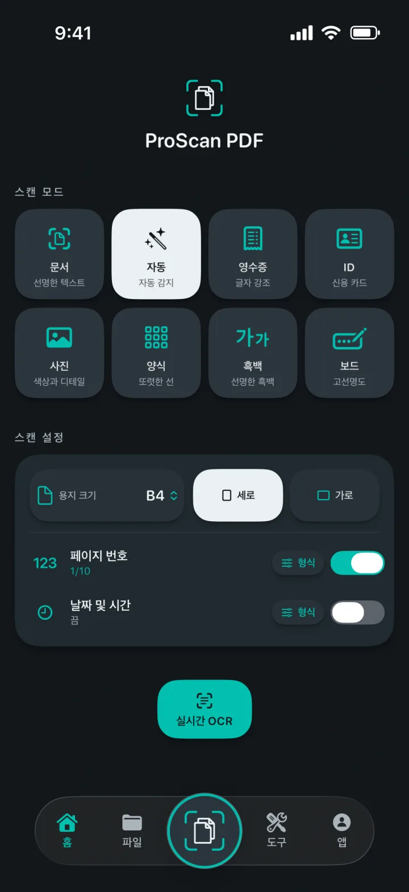
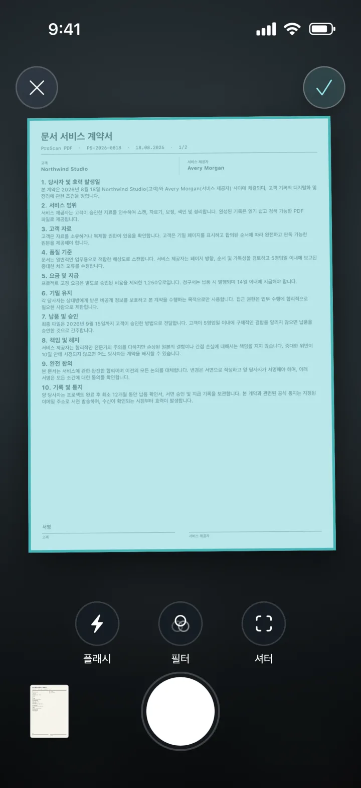
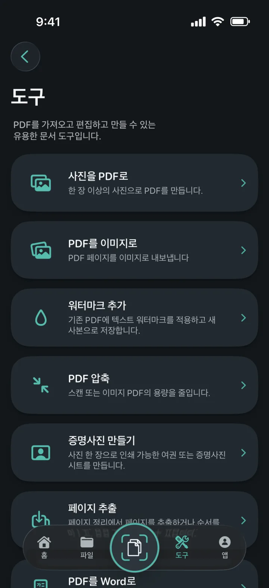
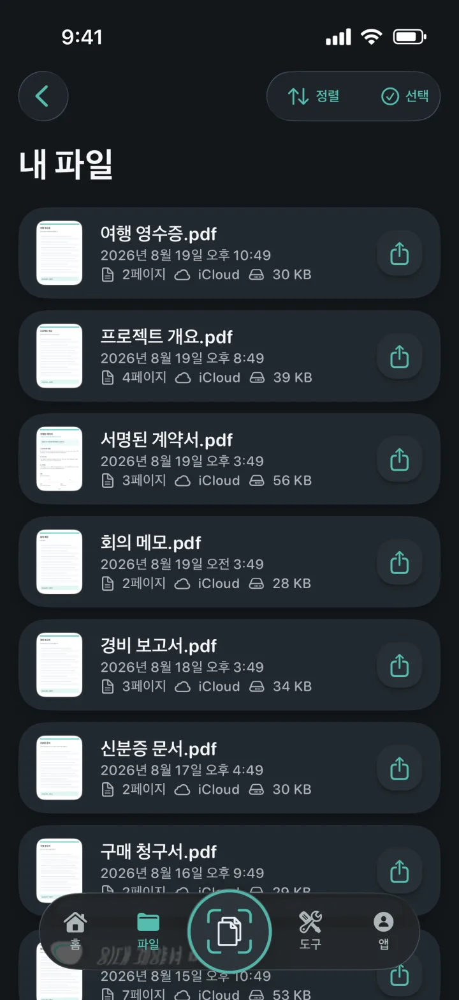
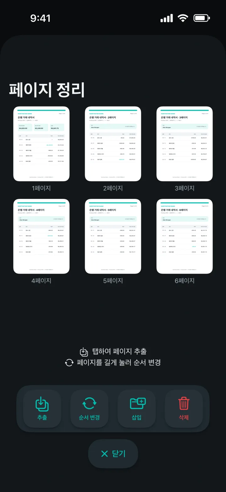
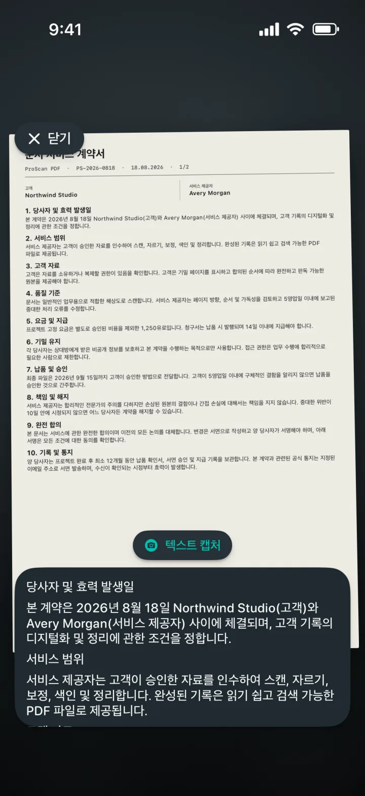

사진을 PDF로
한 장 이상의 사진을 깔끔한 PDF로 만드세요.
페이지를 이해하는 스마트 스캐너
문서, 영수증, 신분증, 메모, 사진을 깔끔한 PDF로 만드세요. 광고와 워터마크 없이 편집, 서명, 보호, 공유까지 한 번에 할 수 있습니다.

페이지를 이해하는 스마트 스캐너
알맞은 모드를 선택하고 페이지를 화면에 맞춘 다음 촬영은 Apple 문서 스캐너에 맡기세요. 시작 전에 용지 크기, 방향, 페이지 번호, 날짜와 시간을 설정할 수 있습니다.

PDF 도구를 한곳에
하나의 깔끔한 작업 공간에서 PDF를 가져오고 변환하고 편집하고 만들 수 있습니다.

한 장 이상의 사진을 깔끔한 PDF로 만드세요.
각 PDF 페이지를 이미지로 내보낸 다음 저장하거나 공유하세요.
새 PDF 사본에 컬러 텍스트 워터마크를 추가하세요.
스캔 및 이미지 기반 PDF의 파일 크기를 줄이세요.
자르고 확인한 뒤 정확한 크기나 인쇄용 시트로 내보내세요.
PDF 페이지를 추출하고 순서를 바꾸고 삽입하거나 삭제하세요.
가능한 경우 레이아웃을 유지하면서 편집 가능한 Word 파일을 만드세요.
검색 가능한 사본을 만들고 뷰어에서 텍스트를 찾으세요.


문서를 깔끔하게 정리
로컬 사본 덕분에 보관함을 빠르게 열 수 있습니다. 비공개 iCloud 백업을 사용하면 다른 Apple 기기로 옮긴 뒤에도 문서를 계속 이용할 수 있습니다.
개인정보 보호를 중심으로 설계
스캔, OCR, PDF 처리는 기기에서 로컬로 이루어집니다. ProScan PDF는 문서를 자체 서버에 업로드하지 않습니다.
개인정보 처리방침 읽기OCR 및 검색 가능한 문서
텍스트를 실시간으로 캡처하고 스캔에서 편집 가능한 내용을 추출하거나 검색 가능한 PDF 사본을 만드세요. 모든 처리는 iPhone 또는 iPad에서 이루어집니다.

나에게 맞춘 디자인
테마마다 앱 인터페이스가 달라지고 어울리는 홈 화면 아이콘이 제공됩니다.
그래파이트 위의 스캐너 틸과 종이 화이트.
깊은 블랙 위의 일렉트릭 시안과 바이올렛.
밝은 종이 표면 위의 깔끔한 블루 컨트롤.
부드러운 차콜 위의 코랄, 바이올렛, 민트.
세련된 미드나이트 네이비 위의 샴페인과 블러시.
그래파이트 위의 차가운 실버와 빛나는 골드.
깊은 포레스트 그린 위의 따뜻한 크림과 테라코타.
영어, 독일어, 스페인어, 프랑스어, 이탈리아어, 네덜란드어, 폴란드어, 브라질 포르투갈어, 유럽 포르투갈어, 터키어, 중국어 간체, 일본어, 한국어, 힌디어를 지원합니다.
자주 묻는 질문
개인정보 보호, 저장 방식, ProScan PDF로 할 수 있는 일을 명확하게 안내합니다.
아니요. ProScan PDF는 앱에 광고를 표시하지 않으며 스캔한 문서에 워터마크를 추가하지 않습니다.
핵심 스캔, OCR, PDF 도구는 기기에서 실행되며 오프라인으로 사용할 수 있습니다. iCloud 백업과 공유에는 네트워크 연결이 필요합니다.
문서는 빠르게 열 수 있도록 앱의 로컬 보관함에 저장됩니다. iCloud를 사용할 수 있으면 비공개 백업 사본을 사용자의 iCloud 계정에 저장할 수 있습니다.
사진을 PDF로, PDF를 이미지로, 워터마크, 압축, 증명사진 만들기, 페이지 추출 및 정리, PDF를 Word로, 검색 가능 PDF, 병합, 서명, 암호 보호 기능을 제공합니다.
매일 3회 무료 스캔을 이용할 수 있습니다. Pro는 무제한 스캔과 모든 Pro 도구를 잠금 해제합니다.

다음 문서도 탭 한 번이면 충분합니다
광고 없음. 워터마크 없음.